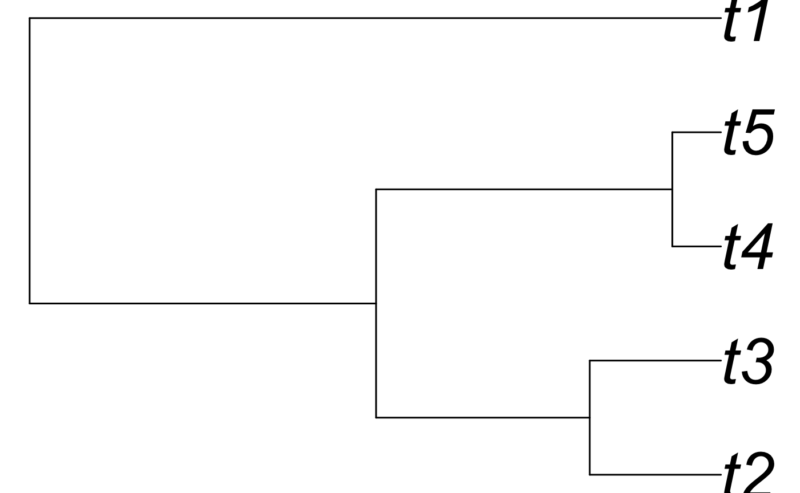
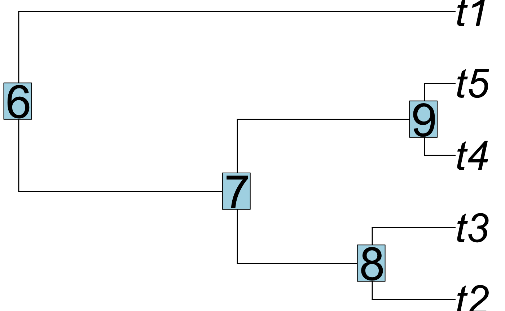
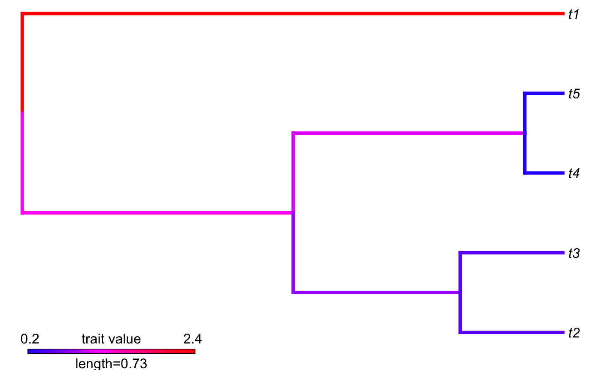
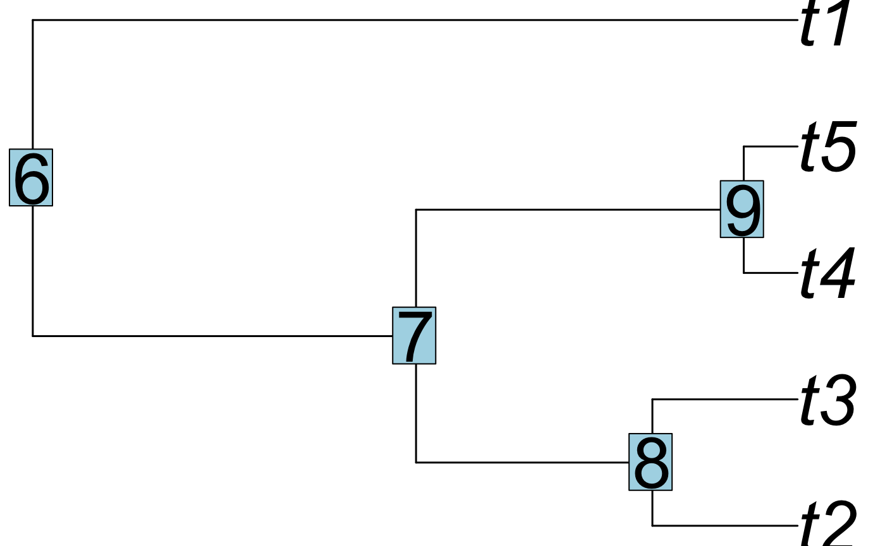
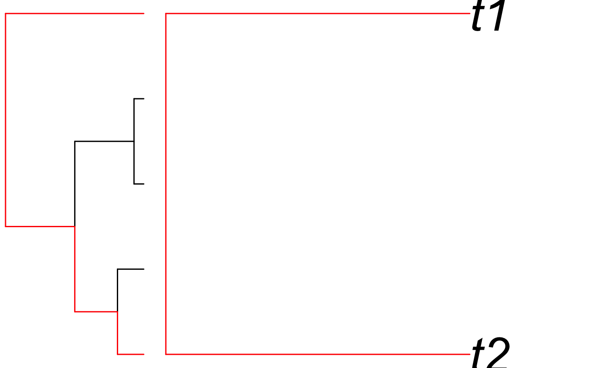
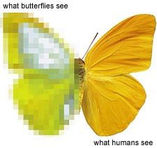
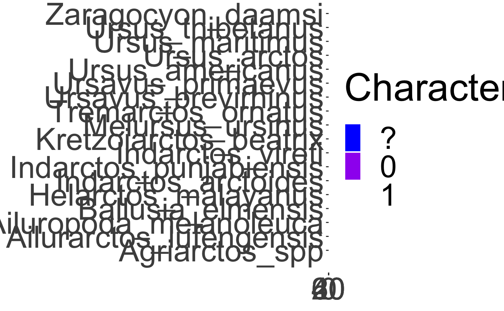
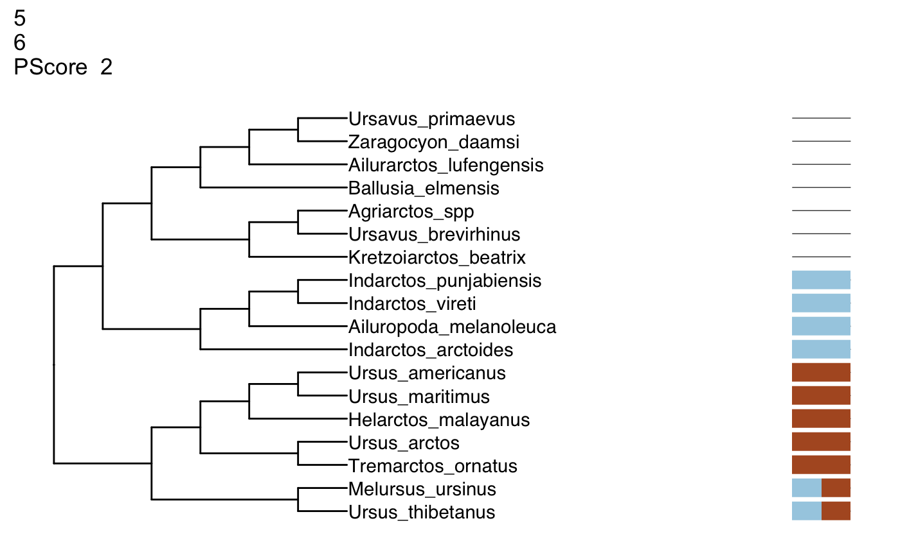

Tree Thinking
April Wright
7.17.19
TreeThinking.RmdWhat do we do with a phylogeny?
- Determine the timing of trait evolution

Skink tree from Wright et al. 2015

 Dolphin, Alex Vasenin via WikiMedia
Dolphin, Alex Vasenin via WikiMediaWhat do we do with a phylogeny?
- Trace the origins of structures

Ask a Biologist illustration of homology
What do we do with a phylogeny?
Taxonomy
-
Hennig, 1950 Grundzüge einer Theorie der Phylogenetischen Systematik
- Taxonomy should be logically consistent with the tree for the group
What do we do with a phylogeny?
Taxonomy
-
Hennig, 1950 Grundzüge einer Theorie der Phylogenetischen Systematik
- Taxonomy should be logically consistent with the tree for the group
-
Sneath & Sokal, 1963, 1973
- Using distance matrices to cluster based on phenetic similarity
Tree Terms: Tip
library(phytools)## Loading required package: ape## Loading required package: maps
Tip: What we are putting on the tree. May be species, individuals, or higher-order taxa. May be called terminal node, leaf, one degree node.
Tree Terms: Tip
plot(tree, cex = 3.5, no.margin = TRUE, edge.width = 1.5)
## [1] "t2" "t3" "t4" "t5" "t1"[1] "t4" "t5" "t1" "t2" "t3"Access in R: tree$tip.label
Tree Terms: Node
plot(tree, cex = 3.5, no.margin = TRUE, edge.width = 1.5)
nodelabels(cex=4)
Node: Where nodes meet, implying a most recent common ancestor. May be called vertex, or three-degree node.
Tree Terms: branch
[,1] [,2]
[1,] 6 7
[2,] 7 8
[3,] 8 1
[4,] 8 2
[5,] 7 3
[6,] 6 9
[7,] 9 4
[8,] 9 5Branch: What connects the tip to the tree. Can have a variety of units, which we will discuss over the next few days. May be called edge. Access in R: tree$edge
Tree Terms: branch
library(phytools)
plotBranchbyTrait(tree,tree$edge.length,method="tips")
## [1] 1.2144820 0.7489669 0.4599640 0.4599640 1.0385148 0.1704161 0.1704161
## [8] 2.4234130[1] 0.01070042 1.00622147 0.36177554 0.36177554 1.36799701 0.23368315
[7] 1.14501427 1.14501427Tree Terms: Rotation - reflecting taxa at a node
plot(tree, cex = 3.5, no.margin = TRUE, edge.width = 1.5)
nodelabels(cex = 3.5)
rotateNodes(tree, c(7, 8))##
## Phylogenetic tree with 5 tips and 4 internal nodes.
##
## Tip labels:
## [1] "t4" "t5" "t3" "t2" "t1"
##
## Rooted; includes branch lengths.
Phylogenetic tree with 5 tips and 4 internal nodes.
Tip labels:
[1] "t1" "t5" "t4" "t2" "t3"
Rooted; includes branch lengths.plot(tree, cex = 3.5, no.margin = TRUE, edge.width = 1.5)
Tree Terms: Monophyletic - an ancestor and all its descendents
is.monophyletic(tree, c("t1", "t2"), plot = TRUE, edge.width = 1.5, cex = 3.5, no.margin = TRUE)
## [1] FALSE[1] FALSETree Terms: Rooting
# reroot(tree, node.number)
plot(tree, cex = 3.5, no.margin = TRUE, edge.width = 1.5)
Ingroup: Taxa of interest
Outgroup: Taxon closely related used to root the tree
How is a tree built?
- Many ways. We will focus on three:
- Maximum parsimony
- Maximum likelihood
- Bayesian inference
Phylogenetic Data
library(alignfigR)## Welcome to alignfigR!char_data <- read_alignment("../../data/bears_fasta.fa")
char_data[1:3]## $Agriarctos_spp
## [1] "?" "0" "?" "?" "?" "?" "?" "?" "?" "?" "?" "?" "?" "?" "?" "?" "0"
## [18] "0" "0" "1" "1" "1" "1" "0" "0" "1" "?" "1" "1" "?" "0" "1" "1" "1"
## [35] "1" "0" "1" "1" "0" "?" "?" "0" "1" "1" "1" "0" "?" "?" "?" "?" "?"
## [52] "?" "?" "?" "?" "?" "?" "?" "?" "?" "?" "?"
##
## $Ailurarctos_lufengensis
## [1] "?" "0" "?" "?" "?" "?" "?" "?" "?" "?" "?" "?" "?" "?" "?" "?" "?"
## [18] "0" "0" "1" "1" "1" "1" "0" "1" "1" "?" "1" "1" "?" "0" "?" "?" "?"
## [35] "?" "0" "1" "1" "1" "?" "0" "0" "1" "1" "1" "0" "1" "0" "1" "1" "0"
## [52] "1" "1" "?" "?" "?" "?" "?" "?" "?" "?" "?"
##
## $Ailuropoda_melanoleuca
## [1] "1" "0" "1" "1" "1" "1" "0" "1" "1" "0" "1" "0" "0" "1" "0" "0" "0"
## [18] "0" "0" "1" "1" "1" "1" "0" "1" "0" "1" "1" "1" "0" "0" "1" "0" "1"
## [35] "0" "0" "1" "1" "0" "0" "0" "0" "1" "1" "1" "0" "1" "0" "0" "1" "0"
## [52] "1" "1" "0" "0" "0" "1" "0" "0" "0" "1" "0"$Agriarctos_spp
[1] "?" "0" "?" "?" "?" "?" "?" "?" "?" "?" "?" "?" "?" "?" "?" "?" "0"
[18] "0" "0" "1" "1" "1" "1" "0" "0" "1" "?" "1" "1" "?" "0" "1" "1" "1"
[35] "1" "0" "1" "1" "0" "?" "?" "0" "1" "1" "1" "0" "?" "?" "?" "?" "?"
[52] "?" "?" "?" "?" "?" "?" "?" "?" "?" "?" "?"
$Ailurarctos_lufengensis
[1] "?" "0" "?" "?" "?" "?" "?" "?" "?" "?" "?" "?" "?" "?" "?" "?" "?"
[18] "0" "0" "1" "1" "1" "1" "0" "1" "1" "?" "1" "1" "?" "0" "?" "?" "?"
[35] "?" "0" "1" "1" "1" "?" "0" "0" "1" "1" "1" "0" "1" "0" "1" "1" "0"
[52] "1" "1" "?" "?" "?" "?" "?" "?" "?" "?" "?"
$Ailuropoda_melanoleuca
[1] "1" "0" "1" "1" "1" "1" "0" "1" "1" "0" "1" "0" "0" "1" "0" "0" "0"
[18] "0" "0" "1" "1" "1" "1" "0" "1" "0" "1" "1" "1" "0" "0" "1" "0" "1"
[35] "0" "0" "1" "1" "0" "0" "0" "0" "1" "1" "1" "0" "1" "0" "0" "1" "0"
[52] "1" "1" "0" "0" "0" "1" "0" "0" "0" "1" "0"Phylogenetic Data
library(alignfigR)
char_data <- read_alignment("../../data/bears_fasta.fa")
char_data[1:3]## $Agriarctos_spp
## [1] "?" "0" "?" "?" "?" "?" "?" "?" "?" "?" "?" "?" "?" "?" "?" "?" "0"
## [18] "0" "0" "1" "1" "1" "1" "0" "0" "1" "?" "1" "1" "?" "0" "1" "1" "1"
## [35] "1" "0" "1" "1" "0" "?" "?" "0" "1" "1" "1" "0" "?" "?" "?" "?" "?"
## [52] "?" "?" "?" "?" "?" "?" "?" "?" "?" "?" "?"
##
## $Ailurarctos_lufengensis
## [1] "?" "0" "?" "?" "?" "?" "?" "?" "?" "?" "?" "?" "?" "?" "?" "?" "?"
## [18] "0" "0" "1" "1" "1" "1" "0" "1" "1" "?" "1" "1" "?" "0" "?" "?" "?"
## [35] "?" "0" "1" "1" "1" "?" "0" "0" "1" "1" "1" "0" "1" "0" "1" "1" "0"
## [52] "1" "1" "?" "?" "?" "?" "?" "?" "?" "?" "?"
##
## $Ailuropoda_melanoleuca
## [1] "1" "0" "1" "1" "1" "1" "0" "1" "1" "0" "1" "0" "0" "1" "0" "0" "0"
## [18] "0" "0" "1" "1" "1" "1" "0" "1" "0" "1" "1" "1" "0" "0" "1" "0" "1"
## [35] "0" "0" "1" "1" "0" "0" "0" "0" "1" "1" "1" "0" "1" "0" "0" "1" "0"
## [52] "1" "1" "0" "0" "0" "1" "0" "0" "0" "1" "0"$Agriarctos_spp
[1] "?" "0" "?" "?" "?" "?" "?" "?" "?" "?" "?" "?" "?" "?" "?" "?" "0"
[18] "0" "0" "1" "1" "1" "1" "0" "0" "1" "?" "1" "1" "?" "0" "1" "1" "1"
[35] "1" "0" "1" "1" "0" "?" "?" "0" "1" "1" "1" "0" "?" "?" "?" "?" "?"
[52] "?" "?" "?" "?" "?" "?" "?" "?" "?" "?" "?"
$Ailurarctos_lufengensis
[1] "?" "0" "?" "?" "?" "?" "?" "?" "?" "?" "?" "?" "?" "?" "?" "?" "?"
[18] "0" "0" "1" "1" "1" "1" "0" "1" "1" "?" "1" "1" "?" "0" "?" "?" "?"
[35] "?" "0" "1" "1" "1" "?" "0" "0" "1" "1" "1" "0" "1" "0" "1" "1" "0"
[52] "1" "1" "?" "?" "?" "?" "?" "?" "?" "?" "?"
$Ailuropoda_melanoleuca
[1] "1" "0" "1" "1" "1" "1" "0" "1" "1" "0" "1" "0" "0" "1" "0" "0" "0"
[18] "0" "0" "1" "1" "1" "1" "0" "1" "0" "1" "1" "1" "0" "0" "1" "0" "1"
[35] "0" "0" "1" "1" "0" "0" "0" "0" "1" "1" "1" "0" "1" "0" "0" "1" "0"
[52] "1" "1" "0" "0" "0" "1" "0" "0" "0" "1" "0"These data are binary
Phylogenetic Data
library(alignfigR)
char_data <- read_alignment("../../data/bears_fasta.fa")
char_data[1:3]## $Agriarctos_spp
## [1] "?" "0" "?" "?" "?" "?" "?" "?" "?" "?" "?" "?" "?" "?" "?" "?" "0"
## [18] "0" "0" "1" "1" "1" "1" "0" "0" "1" "?" "1" "1" "?" "0" "1" "1" "1"
## [35] "1" "0" "1" "1" "0" "?" "?" "0" "1" "1" "1" "0" "?" "?" "?" "?" "?"
## [52] "?" "?" "?" "?" "?" "?" "?" "?" "?" "?" "?"
##
## $Ailurarctos_lufengensis
## [1] "?" "0" "?" "?" "?" "?" "?" "?" "?" "?" "?" "?" "?" "?" "?" "?" "?"
## [18] "0" "0" "1" "1" "1" "1" "0" "1" "1" "?" "1" "1" "?" "0" "?" "?" "?"
## [35] "?" "0" "1" "1" "1" "?" "0" "0" "1" "1" "1" "0" "1" "0" "1" "1" "0"
## [52] "1" "1" "?" "?" "?" "?" "?" "?" "?" "?" "?"
##
## $Ailuropoda_melanoleuca
## [1] "1" "0" "1" "1" "1" "1" "0" "1" "1" "0" "1" "0" "0" "1" "0" "0" "0"
## [18] "0" "0" "1" "1" "1" "1" "0" "1" "0" "1" "1" "1" "0" "0" "1" "0" "1"
## [35] "0" "0" "1" "1" "0" "0" "0" "0" "1" "1" "1" "0" "1" "0" "0" "1" "0"
## [52] "1" "1" "0" "0" "0" "1" "0" "0" "0" "1" "0"$Agriarctos_spp
[1] "?" "0" "?" "?" "?" "?" "?" "?" "?" "?" "?" "?" "?" "?" "?" "?" "0"
[18] "0" "0" "1" "1" "1" "1" "0" "0" "1" "?" "1" "1" "?" "0" "1" "1" "1"
[35] "1" "0" "1" "1" "0" "?" "?" "0" "1" "1" "1" "0" "?" "?" "?" "?" "?"
[52] "?" "?" "?" "?" "?" "?" "?" "?" "?" "?" "?"
$Ailurarctos_lufengensis
[1] "?" "0" "?" "?" "?" "?" "?" "?" "?" "?" "?" "?" "?" "?" "?" "?" "?"
[18] "0" "0" "1" "1" "1" "1" "0" "1" "1" "?" "1" "1" "?" "0" "?" "?" "?"
[35] "?" "0" "1" "1" "1" "?" "0" "0" "1" "1" "1" "0" "1" "0" "1" "1" "0"
[52] "1" "1" "?" "?" "?" "?" "?" "?" "?" "?" "?"
$Ailuropoda_melanoleuca
[1] "1" "0" "1" "1" "1" "1" "0" "1" "1" "0" "1" "0" "0" "1" "0" "0" "0"
[18] "0" "0" "1" "1" "1" "1" "0" "1" "0" "1" "1" "1" "0" "0" "1" "0" "1"
[35] "0" "0" "1" "1" "0" "0" "0" "0" "1" "1" "1" "0" "1" "0" "0" "1" "0"
[52] "1" "1" "0" "0" "0" "1" "0" "0" "0" "1" "0"Always arranged with rows being taxa and columns corresponding to a character - “matrix” structure
Phylogenetic Data
Example character from Brady:
- Worker, queen, and male. Specialized, stout setae on anterior margin of clypeus: (0) absent; (1) present. The presence of these specialized setae is a putative synapomorphy of Amblyoponinae (Ward, 1994), including Amblyopone and Onychomyrmex.

image via Ask a Biologist
Phylogenetic Data
How do we know we’ve captured the relevant character axes? 
image via Ask a biologist, Mike Hagelberg
Phylogenetic Data
library(ggplot2)
colors <- c("blue", "purple","white")
plot_alignment(char_data, colors, taxon_labels = TRUE) + theme(text = element_text(size=40))
Phylogenetic Data
library(ggplot2)
colors <- c("blue", "purple","white")
plot_alignment(char_data, colors, taxon_labels = TRUE) + theme(text = element_text(size=40))
How do we go from this to a tree?
Parsimony
- Not only applied in phylogenetics
- The simplest explanation for the observed data is the best
Parsimony
- Maximum parsimony: the tree that minimizes the number of “steps”, or changes, on a tree is to be preferred
- Let’s turn to the board for a minute: Parsimony informative, invariant, and parsimony non-informative variation
??? Have them start installs on the next page while we do this.
treesiftr
library(treesiftr)## Registered S3 method overwritten by 'treeio':
## method from
## root.phylo ape##
## Attaching package: 'treesiftr'## The following object is masked _by_ '.GlobalEnv':
##
## treealn_path <- "../../data/bears_fasta.fa"
bears <- read_alignment(aln_path)
bear_tree <- multi2di(read.tree("../../data/starting_tree.tre"))
sample_df <- generate_sliding(bears, start_char = 1, stop_char = 5, steps = 1)
print(sample_df)## starting_val stop_val step_val
## 1 1 2 1
## 2 2 3 1
## 3 3 4 1
## 4 4 5 1
## 5 5 6 1 starting_val stop_val step_val
1 1 2 1
2 2 3 1
3 3 4 1
4 4 5 1
5 5 6 1treesiftr
## ggtree v1.16.3 For help: https://yulab-smu.github.io/treedata-book/
##
## If you use ggtree in published research, please cite the most appropriate paper(s):
##
## [36m-[39m Guangchuang Yu, Tommy Tsan-Yuk Lam, Huachen Zhu, Yi Guan. Two methods for mapping and visualizing associated data on phylogeny using ggtree. Molecular Biology and Evolution 2018, accepted. doi: 10.1093/molbev/msy194[36m-[39m Guangchuang Yu, David Smith, Huachen Zhu, Yi Guan, Tommy Tsan-Yuk Lam. ggtree: an R package for visualization and annotation of phylogenetic trees with their covariates and other associated data. Methods in Ecology and Evolution 2017, 8(1):28-36, doi:10.1111/2041-210X.12628##
## Attaching package: 'ggtree'## The following object is masked from 'package:phytools':
##
## read.newick## The following object is masked from 'package:ape':
##
## rotateoutput_vector <- generate_tree_vis(sample_df = sample_df, alignment = aln_path,
tree = bear_tree,
phy_mat = bears, pscore = TRUE)## Generating tree for charset:12## Final p-score 2 after 0 nni operations## Generating tree for charset:23## Final p-score 2 after 0 nni operations## Generating tree for charset:34## Final p-score 2 after 0 nni operations## Generating tree for charset:45## Final p-score 2 after 0 nni operations## Generating tree for charset:56## Final p-score 2 after 0 nni operationstreesiftr
## [[1]]
## NULL
##
## [[2]]
## NULL
##
## [[3]]
## NULL
##
## [[4]]
## NULL
##
## [[5]]
Parsimony: Many trees for one character and 4 taxa

Parsimony Trees
This is one character. Imagine many - enumeration is not possible.Also note that several trees have the same “best” tree
Image via Mark Holder
Parsimony: How do we find the most parsimonious tree?
- We’re going to take an exercise break and play with PAUP
- http://phylosolutions.com/paup-test/
- Download the command line executeable for your OS
- Copy it into this repository
- Open a terminal
PAUP
execute data/bears_morphology.nex- NOTE: PAUP allows tab-completion
- Open the bears_morphology file in a text editor. Now:
PAUP: A couple important commands
cstatus
tstatus
showmatrix
showdist
log file="mylogfile"- Try each of these - what information do they give you?
PAUP: Heuristic Searches
Heuristic - use of shortcuts to reduce the number of trees we need to search
hsearch- What is the name of the heuristic that was used?
- How was the initial tree discovered?
- How many trees were searched?
- How many “best” trees were there, and what is their score?
PAUP: Heuristic Searches
Heuristic - use of shortcuts to reduce the number of trees we need to search
hsearch swap = nni- How many trees were examined with this algorithm? Why is this number so much smaller?
- How many “best” trees were found, and what is their score?